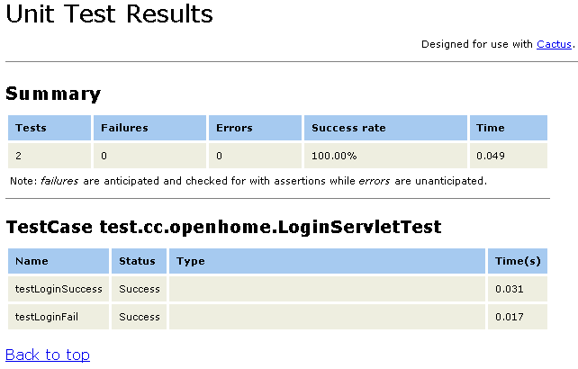

|
|
如
果要更貼近真實的環境，你可以實際安裝實際部署專案時所用的容器，設定Cactus的Redirect proxy，由TestRunner客戶
端去請求Redirect proxy，就測試Servlet而言，只需要在web.xml中設定： ...
<servlet> <servlet-name>ServletTestRedirector</servlet-name> <servlet-class>org.apache.cactus.server.ServletTestRedirector</servlet-class> </servlet> <servlet-mapping> <servlet-name>ServletTestRedirector</servlet-name> <url-pattern>/ServletRedirector</url-pattern> </servlet-mapping> ... 客戶端TestRunner預 設會請求伺服端的/ServletRedirector，如果不要這個預設，則可以設定cactus.servletRedirectorName屬 性來修改（相關屬性設定與說明，可參考 Cactus Configuration）。 現在，你可以啟動容器，接著你可以在客戶端撰寫測試案例： package test.cc.openhome; 注意，cactus.contextURL是 你Redirector proxy所在的應用程式根目錄，接著你就可以使用客戶端TestRunner來測 試程式了。 Cactus附帶有伺服端TestRunner， 你可以在web.xml中加以設定，以Servlet的伺服端TestRunner來 說： ... <servlet> <servlet-name>ServletTestRunner</servlet-name> <servlet-class>org.apache.cactus.server.runner.ServletTestRunner</servlet-class> </servlet> <servlet-mapping> <servlet-name>ServletTestRunner</servlet-name> <url-pattern>/ServletTestRunner</url-pattern> </servlet-mapping> ... 如此你就可以直接以瀏覽器請求/ServletTestRunner，指定suite參數為測試案例的全名： http://localhost:8080/CactusExample/
ServletTestRunner?suite=test.cc.openhome.LoginServletTest 預設會以XML傳回測試結果： <testsuites>
<testsuite name="test.cc.openhome.LoginServletTest" tests="2" failures="0" errors="0" time="0.233"> <testcase name="testLoginSuccess" time="0.215"/> <testcase name="testLoginFail" time="0.008"/> </testsuite> </testsuites> 也可以直接取得 Cactus網站上提供的 cactus-report.xsl， 並將之放在Web應用程式的目錄下，然後使用以下的方式來取得較易閱讀的訊息： http://localhost:8080/CactusExample/ServletTestRunner?
suite=test.cc.openhome.LoginServletTest&xsl=cactus-report.xsl 一個結果畫面如下所示：  也可以在 web.xml中指定cactus-report.xsl的位置，例如： ... <servlet> <servlet-name>ServletTestRunner</servlet-name> <servlet-class>org.apache.cactus.server.runner.ServletTestRunner</servlet-class> <init-param> <param-name>xsl-stylesheet</param-name> <param-value>styles/cactus-report.xsl</param-value> </init-param> </servlet> <servlet-mapping> <servlet-name>ServletTestRunner</servlet-name> <url-pattern>/ServletTestRunner</url-pattern> </servlet-mapping> ... 之後在運行測試時 可以於網址列中如下指定： http://localhost:8080/CactusExample/ServletTestRunner? suite=test.cc.openhome.LoginServletTest&transform=yes |